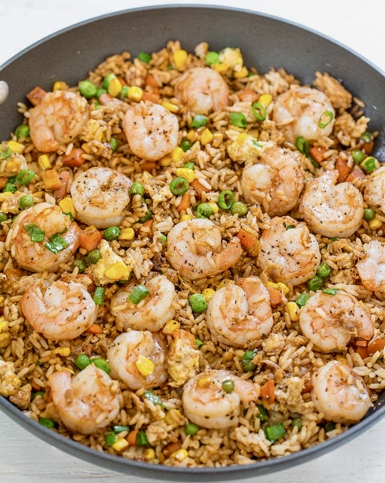

Shrimp Fried Rice

So you want to learn how to make some shrimp fried rice? Look no further and don't order take out no more! This shrimp fried rice is
quick to make if you have some rice laying around from the day before. You can make is in under 30 minutes once you master this recipe.
You won't need get chinese take out again!
Ingredients
Steps
Before we begin, take your rice from the fridge and put in the freezer for at least one hour.
-
First we will marinate the shrimp. Add your shrimp in a bowl and 3 Tbsp of dark soy sauce. Next add a pinch
of pink salt and black pepper in the bowl, Add your one tbsp of garlic and mix. Once done, put your marinated shrimp in the
fridge for 30 minutes.
-
Once your rice has been in the freezer for an hour take it out of the freezer and let it sit on the counter. In a wok put the heat to medium. Add
your 2 tbsp of butter and wait until it melts. Once the butter has melted, crack your 2 large eggs and add to the wok. Scramble them once cooked.
Move the cooked scrambled eggs to another bowl on the side. You will add this later on to the rice.
-
In the same wok, add about 1 tbsp of vegetable oil. Let the oil warm up and take out your shrimp. Once the oil is ready, add in your shrimp and fry
them. Spread the shrimp all over the wok, and fry for 3 to 5 minutes. Be sure to not over cook because later you will re-introduce the shrimp when you
add the rice. Move the shrimp around and when the shrimp is nice and brown, move the shrimp to a separate bowl or plate.
-
Again in the same wok, add one tbsp of sesame oil (This ingredient is very strong and powerful. Add 3/4 of a tbsp and taste as you go.
) and add a tbsp of vegetable oil. Let that warm and then add your cup of mixed vegetables and 1 diced onion, let that fry for 2 minutes.
-
When your two minutes is up now its time to add everything together. While the vegetables are still frying add your 4 cups of cooked rice in the wok.
Once all is added turn the heat to high and chop up the chucks of rice also mix around the rice around the wok. Do this for about 3 minutes. Once that is
up add your cooked shrimp to the rice and turn down the heat to medium high. Stir! Stir! Stir!
-
Now sauces, add your dark soy sauce to the rice, add about 4 tbsp's. Next you want to add your low sodium soy sauce and add around 3 tbsp also. (
Be careful with soy sauce as it contains high levels of salt. Taste as you go. ) Now you want to get your oyster sauce and add about 3 tbsp's
in the yok. Remember to taste as you go. Now take your eggs and add them in the rice! Also take your chopped spring onions and add them in the yok.